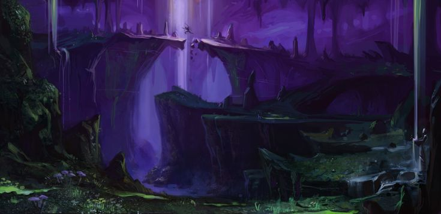

Tono general
El Underdark aquí no es “neón”. Es piedra, humedad, ecos, bioluminiscencia baja y lugares que se sienten antiguos o imposibles. La estética prioriza legibilidad por sobre detalle excesivo.
El Underdark aquí no es “neón”. Es piedra, humedad, ecos, bioluminiscencia baja y lugares que se sienten antiguos o imposibles. La estética prioriza legibilidad por sobre detalle excesivo.


Hongos altos como columnas. Esporas que alteran percepción. Luz tenue “de respiración” (sube y baja).

Superficie negra, reflejos como vidrio. Orillas de piedra lisa, restos de sales, algas pálidas.

Estructuras viejas: rieles, vigas, herramientas. Olor a metal y humedad. Zonas con derrumbes recientes.

Muros tallados dentro de la roca, no “puestos”. Símbolos repetidos. Puertas selladas sin bisagras.

Sugerencia: usa esta estética en el mapa para indicar “zona peligrosa / magia interferida”.